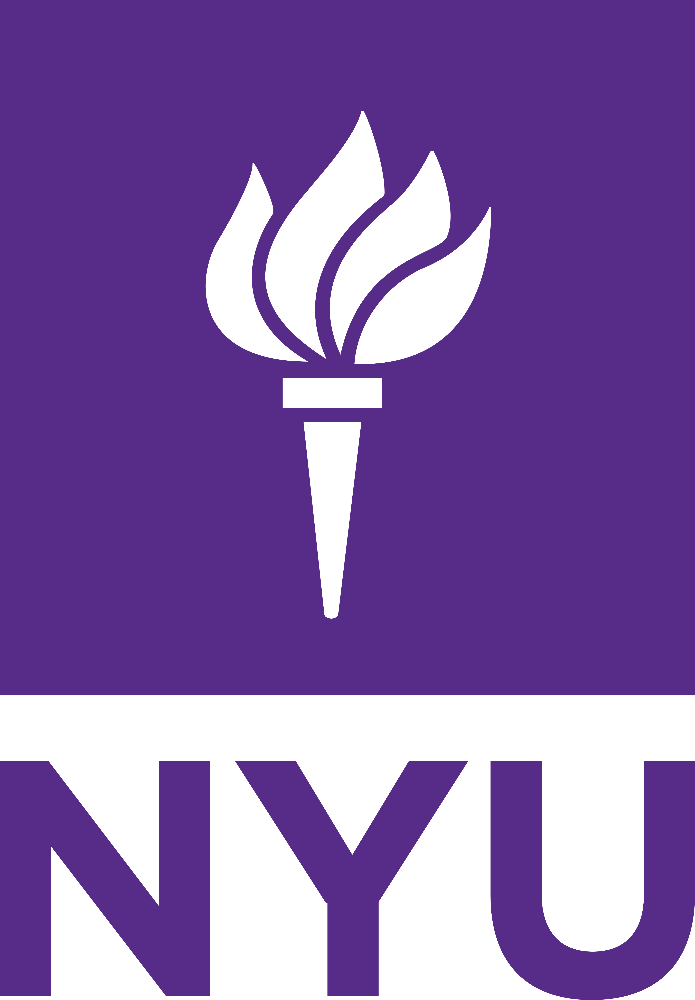
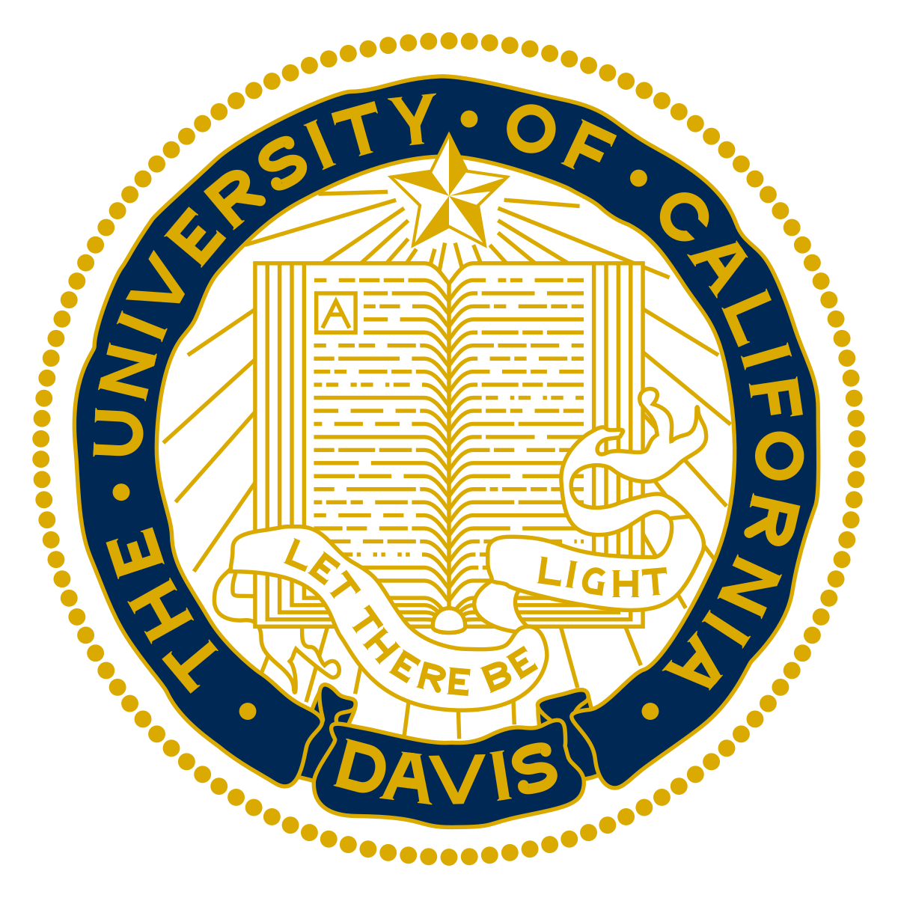

Calina Copos
Assistant Professor Biology & MathematicsCV
Education
-

2017-2020
New York University, Courant Institute
Courant Instructor
Cathleen Morawetz Fellow -

2011-2017
University of California, Davis
Ph.D. in Applied Mathematics, Advisor: Robert Guy
NSF GRFP Fellow -
 2006-2010
2006-2010
University of Richmond
B.Sc. in Mathematics & Physics
Richmond Science Scholar (full tuition)

I cannot remember a time when I wasn't looking to be apart of a community of women interested in science and committed to empowering each other in pursuing STEM-related careers. Back at U of R, Calina was a member of the Women In Science Club, one of the founders of the AWM chapter at UC Davis, and then the sole founder of the Courant Postdoc Tea at NYU. I have served as a speaker and mentor with NYUrWIS Girls Mentoring Program with the Cornelia Connelly Center and STEM Tutoring Cafe to both engage with and inspire younger generations, especially minority women.
At Northeastern, I meet with student clubs including local chapter of AWM, Biochemistry Club, Math Club and was an invited speaker part of the Diversity in Math Bio Series.

Likely to be found: at work or walking, biking, hiking.
Current favorite hobby: felting.
Hoping to make time to: Advocate to stop food insecurity in our communities! In the past, I have volunteer at City Harvest, New York Cares, and Haley House to help provide access to fresh produce and meals.